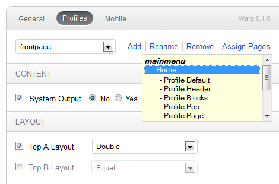

How to use Profiles
A profile is a collection of {doc: theme-settings text:theme settings} controling the style, content and layout of your site, like colors, backgrounds, fonts and module-
behavior. Every theme comes with at least a default profile, new ones can be created. You can apply them to a menu item, thus adding
individual settings to pages of your choice.
Newly created profiles do automatically inherit all settings from the default profile, you just need to apply the necessary settings. The color
variations we deliver with each theme or special module behavior for certain pages are done with profiles, for example.
The Default Profile

You can set your default profile here:
Joomla Extensions > Template Manager > YOO_TEMPLATE > General
WordPress YOO_TEMPLATE > Theme Options > General
All themes usually come with a profile called "default" set as the default profile. The default profile controls many theme settings for the whole installation. If you have created additonal profiles or want to set one of our color variations as the default profile, you can apply them here.
The profile called "default" does always pass all its settings on to all other profiles as long as they are not overriden by them. It can't be deleted.
One option to activate a profile, is to add a string containing the profiles name to an URL, for example index.php&profile=myprofile. This option can be disabled by setting dynamic profiles to No, right below the default profiles setting.
Create a new profile

New profiles can be created if you click on Add at the profiles tab and enter a name.
Below you can see all settings you can control and override with your new profile. By default all values are inherited by the default profile.
To add new values or to select different options than the default ones, you first need to activate the override with the checkbox on the left.
If you later decide, that you don't want to override one of the default values any longer, simply uncheck the box and the profile will load them again.
Manually created profiles can be renamed, deleted and assigned to pages.
Assign a profile to a page

One of the major features is the ability to assign profiles to pages. This gives you the ability to change the themes layout only on certain pages and to keep the default setting for the rest of the site, for example.
To assign a profile to a single or multiple sites, click on Assign Pages and select the pages you want your profile to be assigned to. You can select multiple items by holding Ctrl-Key while clicking
Please note that you can only assign one profile per page. If you have already assigned a profile to a page, it will be displayed in grey color and can't be selected.
Example: Create different layouts for different pages

One of the most common application ranges of profiles assigned to a page is the ability to define different module/widget layouts for certain pages.
Lets say your default setting for modules published on top-a position is set to equal (horizontal layout), but on your frontpage you need your modules on that position to be displayed with the stacked (vertical) layout:
You could create a new profile called frontpage, activate the checkbox for Top-A Layout and select stack. Now you just need to click on Assign Pages, to select your Frontpage and to save your changes. Now only the layout setting for top-A will be overriden on the frontpage, all other settings will keep their default values as long as you don't change them.
Another common option would be to hide the system output on certain pages, if you want your page to just contain modules or widgets and no article or page output.